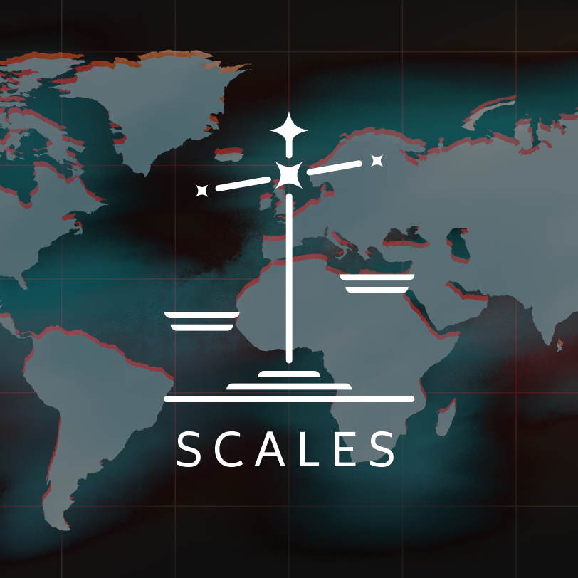
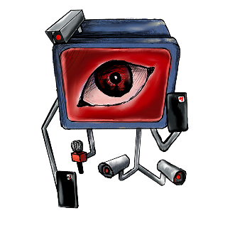
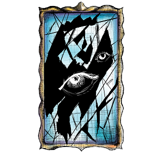
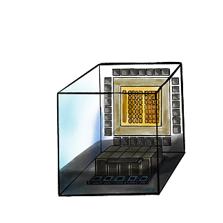

SCALES
A Decision-Making Game on the Hidden Costs of AI Development
Game design · Systems design · Serious games · WebXR · Critical design · AI ethics.
* Awarded best thesis at University of Europe for Applied Sciences in July 2026.
Client:
-
Role:
Concept, Design & Development
Year:
2026
Team:
-
The physical, social and political costs of building AI are hard to see from the outside, and public debate rarely makes them concrete.

This was my MA thesis project, designing a game to visualise the impact of AI development.
I adapted Michael Hardt and Antonio Negri's framework of Empire into three playable factions
Players take decisions as they navigate how technological progress is entangled with physical, social, and political costs.

Big Tech is motivated by profit, progress and the imperative of building AGI.
The State is motivated by military and technological supremacy.
The Multitude are the productive force of our world. They are the ones exploited by other who seek power.
Built decisions around four ways that AI impacts society.
Sovereignty

Concerned with questions autonomy, independence, lawful control.
Identity

Concerned with questions related to the self, civic, and collective recognition.
Power
Concerned with questions of institutional or platform leverage.
Transparency

Concerned with questions of explainability and opacity of systems.
Decision impact scores and determines who wins or if ecological collapse occurs.


Players must achieve their goals before the simulation reaches or surpasses projected ecological baselines of 2030.